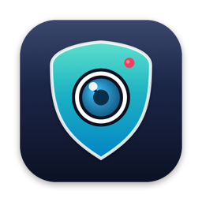

EufyGuard talks to your Eufy stations directly — live H.264/H.265 streaming, PTZ control, guard modes, event timeline with snapshots, native notifications, and an optional Claude AI agent that watches, explains and summarizes what happens at home. EufyGuard dialogue directement avec vos stations Eufy — direct H.264/H.265, pilotage PTZ, modes de garde, timeline d'événements avec snapshots, notifications natives, et un agent IA Claude optionnel qui observe, explique et résume ce qui se passe chez vous. EufyGuard 直接与您的 Eufy 基站通信——H.264/H.265 实时直播、PTZ 云台控制、布防模式、带快照的事件时间线、原生通知，以及可选的 Claude AI 智能体，为您观察、解释并总结家中发生的一切。
macOS 14+ · Developer ID signed & notarized · Sparkle 2 updates · MIT license macOS 14+ · Signée Developer ID & notariée · Mises à jour Sparkle 2 · Licence MIT macOS 14+ · Developer ID 签名并经公证 · Sparkle 2 更新 · MIT 许可证
Raw H.264/H.265 from the station's P2P stream, decoded in hardware by VideoToolbox. No ffmpeg, no browser, no transcoding.Flux H.264/H.265 brut issu du P2P de la station, décodé matériellement par VideoToolbox. Sans ffmpeg, sans navigateur, sans transcodage.来自基站 P2P 的原始 H.264/H.265 码流，由 VideoToolbox 硬件解码。无 ffmpeg、无浏览器、无转码。
Pan, tilt and 360° rotation on motorized cameras — on-screen pad or arrow keys, straight from the live view.Panoramique, inclinaison et rotation 360° des caméras motorisées — pad à l'écran ou flèches clavier, depuis la vue directe.电动摄像头的平移、俯仰与 360° 旋转——屏幕方向盘或方向键，直接在直播画面中操作。
Home, away, scheduled or disarmed — per station, from the dashboard toolbar.Domicile, absent, programmé ou désarmé — par station, depuis la barre du dashboard.在家、外出、定时或撤防——按基站设置，就在仪表盘工具栏。
Motion, person, ring, pet, vehicle and sound detection land in a timeline with snapshots and trigger native macOS notifications.Mouvement, personne, sonnette, animal, véhicule et son alimentent une timeline avec snapshots et déclenchent des notifications macOS natives.移动、人形、门铃、宠物、车辆与声音侦测进入带快照的时间线，并触发原生 macOS 通知。
With your own Anthropic API key: vision analysis of every event, a chat grounded on recent activity, and a 24-hour digest.Avec votre propre clé API Anthropic : analyse vision de chaque événement, chat ancré sur l'activité récente, et résumé sur 24 h.使用您自己的 Anthropic API 密钥：对每个事件进行视觉分析、基于近期活动的对话，以及 24 小时摘要。
A local Node bridge on 127.0.0.1 talks to Eufy; credentials and snapshots stay on your Mac. No third-party server, open source.Un bridge Node local sur 127.0.0.1 dialogue avec Eufy ; identifiants et snapshots restent sur votre Mac. Aucun serveur tiers, open source.本地 Node 桥接进程通过 127.0.0.1 与 Eufy 通信；凭据与快照保留在您的 Mac 上。无第三方服务器，开源。
Grab the latest signed .dmg from GitHub Releases and drop EufyGuard into /Applications.Récupérez le dernier .dmg signé depuis GitHub Releases et déposez EufyGuard dans /Applications.从 GitHub Releases 获取最新签名的 .dmg，并将 EufyGuard 拖入 /Applications。
Clone the repo, then npm install && npm run build in bridge/ (Node ≥ 20). The app launches and supervises it for you.Clonez le repo, puis npm install && npm run build dans bridge/ (Node ≥ 20). L'app le lance et le supervise pour vous.克隆仓库，然后在 bridge/ 中执行 npm install && npm run build（Node ≥ 20）。应用会为您启动并监管它。
Enter your Eufy account in Settings (captcha and 2FA supported). Optionally add an Anthropic API key to enable the AI agent.Saisissez votre compte Eufy dans les Réglages (captcha et 2FA gérés). Ajoutez si vous voulez une clé API Anthropic pour activer l'agent IA.在设置中输入您的 Eufy 账户（支持验证码与两步验证）。可选填入 Anthropic API 密钥以启用 AI 智能体。
Unofficial project — not affiliated with Eufy or Anker. Built on the open-source eufy-security-client protocol implementation. Your cameras, your Mac, your data. Projet non officiel — sans affiliation avec Eufy ni Anker. Construit sur l'implémentation open source du protocole eufy-security-client. Vos caméras, votre Mac, vos données. 非官方项目——与 Eufy 或 Anker 无关。基于开源的 eufy-security-client 协议实现。您的摄像头、您的 Mac、您的数据。